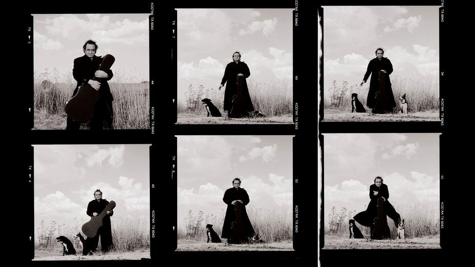
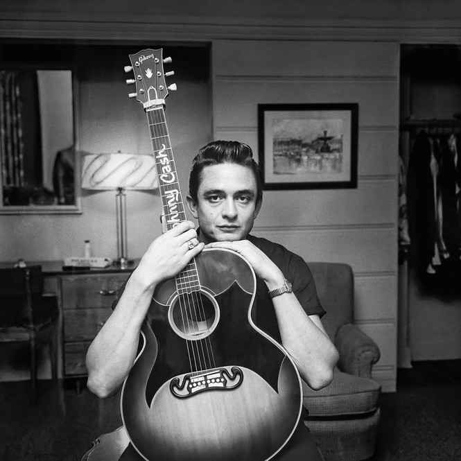

| 上一项 | 文章 | 章节 | 下一项 |
The Impossible Politics of Johnny Cash
He was beloved by Americans who could agree on little else. Was he too eager to please?
by Stephen Metcalf

Johnny Cash in 1994 (Andy Earl / Camera Press / Redux)
Johnny Cash, so the standard line goes, was a man of many parts. “There was no one single Cash,” the scholar Leigh H. Edwards has argued. “He was always multiple, changing, inconsistent.” He was both “Saturday night and Sunday morning” is how the rock journalist Anthony DeCurtis put it; he was a “walkin’ contradiction,” Kris Kristofferson, Cash’s sometime collaborator and running buddy, sang in a song.
To work my way past the cliché and remember what a high-wire act his once was, I recently rewatched footage of Cash at the Newport Folk Festival. It’s 1964, and he looks almost like Montgomery Clift, a beautiful and half-broken man. He is so lean and angular from abusing amphetamines, he no longer fills out his signature black suit; his eyes are set alarmingly deep. But the unbroken half? It’s downright magnificent, how he chews his gum and carelessly plays his guitar, dead-strumming it like it’s a washboard.
He’d been scheduled to appear Friday night with Joan Baez and Phil Ochs, but missed his flight—a bad omen, considering the shape he was in. His film career was a joke, his marriage in shambles. Some nights he’d “drive recklessly for hours,” he later wrote, “until I either wrecked the car or finally stopped from exhaustion.” And drugs were now overruling his mind. He’d started with a few “diet pills” to pep himself up, but they’d turned him on “like electricity flowing into a lightbulb,” Cash admitted. By the early ’60s, he was in such sorry shape that he once mumbled and paced, zombielike, around the executive suites of Columbia Records.
The executives had seen enough and threatened to drop him. Worse than the embarrassing behavior—banging on doors in the middle of the night, smashing chandeliers—he was no longer selling. The first of his so-called concept albums hadn’t broken out commercially and had gone all but unnoticed by the music press. And so Cash had come to Newport to win over a new, and potentially lucrative, audience—the kids now flocking to Bob Dylan.
The drugs, however, were drying out his vocal cords. Those days, when Johnny Cash opened his mouth to sing, no one was sure what would come out, least of all Johnny Cash. At Carnegie Hall—a previous proving-ground gig—he could only muster a desiccated whisper. When Cash finally appeared, everyone at Newport gathered to see him. Would he lift them up as one? Or would they need to catch him when he collapsed?
And then, out came the voice—that voice, the old umami and gravel, with all its fragile grandeur intact. Was he perfect that night? No, but this was Johnny fucking Cash, product of Sun Records, where the perfect was the enemy of the sublime. He played “I Walk the Line” and a cover of Dylan’s “Don’t Think Twice, It’s All Right” and then “The Ballad of Ira Hayes,” from his forthcoming album, Bitter Tears. After the show, he and a giddy Dylan traded songs and a guitar. Everyone—the college kids, The New York Times—agreed: He’d blown them all away.
The paradox had lived to see another day.
In a sense, the paradox lives to see yet another day in Citizen Cash: The Political Life and Times of Johnny Cash, which sets Cash’s contrariness in a new light. Cash, the cultural historian Michael Stewart Foley argues, was not just a country-music icon, but a rare kind of political figure. He was seldom a partisan in any traditional sense, and unlike Woody Guthrie and Pete Seeger, he rarely aligned his music with a progressive agenda. Nonetheless, “Cash, without really intending it, fashioned a new model of public citizenship, based on a politics of empathy.”
From the March 2004 issue: Johnny Cash, God’s lonely man
For Foley, Cash’s status as an artist whose music deeply engaged otherwise incompatible audiences gives him a special relevance to us now. He is a radically unsorted man speaking to our radically sorted times. Just as there are two Americas, there are two Johnny Cashes. One is likely better remembered by older fans in red states as the country artist who aligned himself with Richard Nixon and Billy Graham, who sneered at the “hippahs” and wrote the lines “I do like to brag, ’cause I’m mighty proud of that ragged old flag.” The other is the acceptably blue-state Cash, the antiestablishment rebel flipping the bird at a camera in San Quentin; the Cash of Native American rights.
Foley’s method is to remind each set of fans of the other Cash, the Cash they’ve conveniently forgotten, and then show how he made up a single human being, one who did his own justice to the complex task of being an American. The argument has a certain wishfulness to it. To begin with, there’s the faith Foley places in “empathy,” or Cash’s tendency to be “guided by his own emotional and visceral responses to the issues.” What thinking person in 2022—amid the outrage and umbrage Olympics that is American life—still wants an emotional response? We prefer, I think, respect, health care, and a living wage. The case made by Cash is less on behalf of “empathy” than of a world in which partisan affiliation isn’t a depressingly strong predictor of—well, everything else, including musical taste.

Johnny Cash in 1958 (John R. Hamilton / Trunk Archive)
In its selection of guests, Cash’s TV show (on the air from June 1969 through March 1971) willfully mixed Neil Young, still giving off the hippie aroma, with such Grand Ole Opry standbys as Tammy Wynette. But how well does such a delightful miscellany translate into an everyday politics? Foley doesn’t say, though he has a maddening tendency to construe the most modest gesture of allyship as a profile in courage. When Odetta, the folk singer and civil-rights activist, appeared on the show, Cash sang a duet with her. A lovely moment, yes, and not without its significance. Foley’s reading? “By telling the world he had been buying her records for years, he said, in effect, that he had been on the side of Black lives from the start.”
Some readers may walk away convinced that Cash was a Whitmanesque giant, containing multitudes. I often found myself wondering if he wasn’t a two-faced equivocator. The book is a welcome corrective to the tendency to treat the man as so internally contrary as to be a complete enigma. But the cost of rescuing Cash from the metaphysical fog has been to turn him into a plaster saint. Neither does justice to the actual extent of his weirdness.
Johnny Cash grew up in Dyess, Arkansas, otherwise known as “Colonization Project No. 1,” a New Deal development built virtually overnight in 1934. The Cash house was No. 266, on Road 3—five rooms, no electricity, no running water—and it had been plunked down on bad land, all thicket on the surface, waterlogged muck underneath.
Cash lived the Old South archetype of working hard and close to the soil, under conditions of endemic rural poverty, combined with another, quite different archetype of the New Deal as personal savior. The Dyess project had its own full-time home economist to help with canning, sewing, and quilting, as the biographer Robert Hilburn writes in Johnny Cash: The Life ; a farm manager approved the choice of seeds. The radio that first brought Johnny Cash the sounds of country music was purchased with Federal Emergency Relief Administration loan money. Even as the South began urbanizing and suburbanizing, the Cash family remained living anachronisms, smallholders whose pluck went hand in hand with a deep-seated dependence. By the time he graduated high school in 1950, Cash was desperate to leave.
His childhood was Little House on the Prairie crossed with Levittown. (There were 500 government-fabricated houses in the Dyess project.) This may help explain a peculiar quality of Cash’s, of being, as Kristofferson put it, “partly truth and partly fiction”; of seeming firmly anchored in himself, and utterly at sea. At a loss for what to do after stints working in a car-parts factory in Pontiac, Michigan, and cleaning vats in an oleomargarine plant close to Dyess, he joined the Air Force. Able to hear subtle differences in sounds, he was trained as a radio intercept operator; and for three years, at least eight hours a day, he sat in a room outside Munich, listening to Soviet transmissions, distinguishing signal from noise.
His base was in the same town where Hitler had written Mein Kampf. It lay less than 100 miles from the Russians, who could overrun it at will. Surrounded by rural beauty and a lot of bad juju, Cash took up the guitar, playing with barracks buddies and putting his feelings of exile and confinement into his first attempts at songwriting. He had a quick and stiletto wit, a comprehensive mind. This “was no hillbilly stereotype,” Hilburn quotes a fellow airman saying.
And yet. On a couple of occasions, Cash got drunk and harangued a Black man. “Honey,” he wrote to his future wife Vivian, “some N— got smart and I asked him to go outside and he was too yellow.” The letter is sickening, and having read it, some people will understandably never recover a taste for Cash’s music. I did, though, and what follows may help explain why.
From the beginning, rock and roll was notable for the sheer variety of talents and types it could encompass. If Elvis Presley was the lovable dodo, Roy Orbison was a nightingale; if Jerry Lee Lewis was the virtuoso magpie, Johnny Cash was—well, a kind of crow, a spectral oddity with dubious pipes.
He had the rockabilly look (quiffed-up hair, black duds) and carried himself with some of the insolence and swagger of Elvis while keeping a watchful reserve. After leaving the Air Force, he headed to Memphis, where he hoped to break into radio. But the cosmos had other ideas. The day after he stepped off the plane, in July 1954, Sam Phillips recorded Elvis Presley’s first single, “That’s All Right.” Elvis was one of those astonishing young men who is naked even when he’s clothed. Seeing him perform on the flatbed of a truck—the sexual charisma, the utter lack of guile—persuaded Cash to approach Phillips, the founder of Sun Records, and beg him for an audition.
Nobody appealing to the rock-and-roll audience was more country than Cash, and nobody making country music was more rock and roll.
Cash had, at best, rudimentary musical talent, but he had exquisite taste. He gravitated to Memphis’s Beale Street, to a store called the Home of the Blues, where he bought his first record by Sister Rosetta Tharpe, and where he said he discovered the blues and folk recordings made by the folklorist Alan Lomax in the South. Lomax’s astonishing Blues in the Mississippi Night, an album of “Authentic Field Recordings of Negro Folk Music,” became a major influence on Cash’s songwriting. The revelation for Cash, Foley suggests, was how uniquely brutal the experience of Black artists had been, especially those living on prison farms and in levee camps, and also how close it was to that of sharecropping whites. Having worked, hard and by hand, a land they did not own, both shared a keen sense of our country’s ability to break a promise.
Cash’s career was a variation on the master rock-and-roll narrative, of white musicians plagiarizing from Black musicians: He envied but, by and large, he did not steal. He wanted to make gospel records, but Phillips said no. He forced Cash to speed up “I Walk the Line” and “Folsom Prison Blues,” turning him into a (sort of) rock and roller; he turned him into a (sort of) teen idol by changing his name from John to Johnny. By the summer of 1958, Cash had sold more than 6 million records. As was true for Elvis, it was inevitable that he’d graduate from the upstart Sun Records to a major label, and for Cash, that meant recentering his career in Nashville.
Johnny Cash and booming Nashville were a terrible match, and not only because seasoned engineers and easygoing sidemen began to cut, polish, and brighten what was, in its essence, a rough, dark thing. By the late ’50s, Memphis and Nashville were, as music capitals, antitheses. Memphis was the blues, Sun Records, Elvis; Nashville was country music, steel guitars, choral “ooh”s and “aah”s. You see where this is going. As Memphis took so-called hillbilly and race music, and combined them into rock and roll, country music became more self-consciously white. Sam Phillips said as much; Nashville said as much.
Nobody appealing to the rock-and-roll audience was more country than Cash, and nobody making country music was more rock and roll. This made his commercial prospects vast, and his musical identity fragile. Here was a man who’d stayed a homesteader while the nation suburbanized, who could play the blues without thieving style or attitude from Black artists, who always sounded country but never defensively white. In Nashville, the equilibria got lost. The president of Columbia Records thought of Cash as a folk singer and, eyeing the success of Burl Ives and Harry Belafonte, Cash’s manager agreed. Cash embarked on a series of Americana “concept” albums, on which he too often sounded like a museum tour guide. They flatlined commercially. It was in this period that Cash’s drug use amped up.
In 1969, he outstripped the Beatles, but just as he took ownership of the mainstream, the mainstream began falling apart.
Even a zogged-out Johnny Cash could still generate a single as good as “Ring of Fire.” But the truth is, Cash’s best work—the Sun sides, his turn at Newport—all involved some kind of courtship of the rock audience. And then there is At Folsom Prison, from 1968. Unlike any other, the album brought together the spirit of country music with all the eros and paranoia of the ’60s. Folsom and its equally remarkable sequel, At San Quentin, are of a piece with Hank Williams and Jimmie Rodgers and the Louvin Brothers, but also Beggars Banquet and Haight-Ashbury and My Lai. Song after song, you hear the gyres widening.
Read: Johnny Cash’s biggest hit song was about falling in love with Johnny Cash
A wildness flows from Cash to the inmates and back again, until, on the latter record, the place verges on a riot—one that, the producer Bob Johnston believed, would have left Cash dead. The prisoners didn’t riot and Johnny Cash lived. Folsom was reckoned a masterpiece by everyone from the underground press to Cosmopolitan magazine. The wager made at Newport had paid off handsomely, and Rolling Stone’s co-founder Jann Wenner laid the jackpot on the table: “Cash, more than any other contemporary [country] performer, is meaningful in a rock and roll context.” He declared him the artistic peer of Dylan.
Cash and Phillips—piety in their hearts, dollar signs in their eyes—once talked about making music whose appeal was “universal.” Cash had done it: He’d united the rock, pop, folk, and country audiences. In 1969, he outstripped the Beatles, selling 6.5 million records worldwide. But just as he took ownership of the mainstream, the mainstream began falling apart. In 1968, Richard Nixon won the presidency, eking out a plurality in the South, thanks to his careful courtship of white voters resentful of civil rights. And, flattering the white southerner not only as the most reliably conservative voter but as the most “authentic” American, Nixon went on to embrace country music.
This was Cash’s core audience, the country audience, made up largely of white southerners. Their devotion to Cash allowed him to hit the country charts, even when he put out his laziest, most mediocre work. But everyone else helped him outsell the Beatles. Here he faced yet another dilemma, as painful as pitting Memphis against Nashville. As one of the biggest country superstars of the Nixon era, he might have addressed the silent majority and said something important, something concrete and true to his own experience as a white southerner. He could have said: “My bootstraps? They were government-issue. And you know what? Yours were too.”
I know; easy for me to say. But political courage doesn’t begin with introducing a Tammy Wynette fan to Neil Young’s “The Needle and the Damage Done.” It begins with your own ox getting gored. And as exceptional as it was—drawing a living from the gumbo soil—Cash’s childhood was also typical; along with the Cashes, the postwar South got pulled out of poverty by the federal government. Beginning with the New Dealers, who’d labeled the poorer parts of the region “a belt of sickness, misery, and unnecessary death,” through to Pearl Harbor and the Cold War, the federal government poured money into the South, making benefits available—as with Colonization Project No. 1—almost exclusively to white people.
Drawing on his own experience, Cash might have broken up the central falsity of the archipelago of glass and steel known as the New South: its equation of whiteness with self-sufficiency and Blackness with dependency. What did he do instead? He smiled grimly and talked out of both sides of his mouth. When Nixon asked Cash to play the White House, he accepted the invite, but politely refused the White House’s request to cover “Welfare Cadillac,” a racist novelty song.
He persisted in trying to be all things to all people, until, a living effigy in black frock coat and jabot, he rivaled Elvis for losing any evidence of his younger self. In 1976, he served as grand marshal of the bicentennial parade in the nation’s capital, the perfect representative for a country nearing the absolute nadir of its self-respect.
“The people are his audience,” a Billboard editor wrote. But “the people” were at one another’s throats. During a live show in 1990, looking strangely like Nixon—jowly, surreptitious, fundamentally unhappy—he introduced his song “Ragged Old Flag.” “I thank God for all the freedoms we’ve got in this country,” he said, as the arena went quiet. “Even the rights to burn the flag.” Instantly, the crowd turned on him, booing loudly. He silenced them with a single “Shhh,” adding: “We’ve also got a right to bear arms, and if you burn my flag, I’ll shoot you.” And the crowd let out a bloodlust roar.
When Rick Rubin, the hip-hop and metal impresario, began reviving Cash’s career in 1993, the country legend was languishing on the scrap heap of showbiz. His upcoming gig was a residency at the Wayne Newton Theater (capacity 3,000) in Branson, Missouri. He couldn’t even fill that. Here was a man whose own legend was waiting for him to die. But Rubin understood two things: that Johnny Cash was a living encyclopedia of American song, not a museum piece; and that his voice deserved to be presented unadorned.
Their resulting album, American Recordings, features Cash alone, accompanied by just his acoustic guitar. The simplicity worked—artistically, but also in rinsing Cash clean of Nashville, Nixon, and Billy Graham. Rubin had taken him away from the NASCAR dads and handed him over to fans of MTV Unplugged. He re-sorted him.
Read: Country music’s adventurous streak
Thanks in no small part to Rubin, Cash has been a blue-state hero ever since. Citizen Cash pulls, in a salutary way, a reverse Rubin and reminds us that the hipster-acceptable Cash, who hung with Bono and premiered his American Recordings songs at the Viper Room on the Sunset Strip, represents less than half the man. But Foley amasses exactly the right facts, only to draw exactly the wrong conclusion.
Cash wasn’t any kind of a politician. He was an American artist of the very first magnitude. Listening to him, unrelentingly, for months now, I think he did have something to tell us. It may be idiosyncratic, but here is what I heard: Ironically, for a country built on the promise of owning your own land, among the truest Americans are those who worked the earth without owning a single crumb of it. Dispossessed, they were forced to take possession of themselves another way: They sang. Denied, substantively, the right to happiness, they declared instead an absolute right to personality. This was most true of Black people, but it could also be true of poor white people. However you apportion credit, together they created a common inheritance we all live off to this day. Upon that commonality, Cash seemed to believe, we might form a less grossly imperfect union. The hope is very beautiful, and I think, in its way, true. But it is not enough.
This article appears in the January/February 2022 print edition with the headline “He Walked the Line.”
This article was downloaded by calibre from https://www.theatlantic.com/magazine/archive/2022/01/citizen-cash-book-review-michael-stewart-foley/620849/
| 上一项 | 文章 | 章节 | 下一项 |